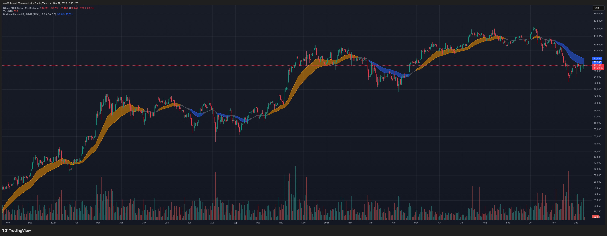

Adaptive Dual MA Trend Ribbon Community “Larsson-Style” Presets
Many traders encounter dual-moving-average “trend ribbon” indicators through popular tools such as the Larsson Line, often sold at price points that put them out of reach for many retail traders.
At a conceptual level, most trend-ribbon indicators are built around a simple idea: plotting two smoothed moving averages and observing how they interact to define trend direction.
This page explains that structure in plain language and provides a free implementation for study and experimentation. The indicator is free to use on TradingView; the script is protected.
Click the chart to open the indicator on TradingView.
How Traders Recreate This Without the Indicator
At its core, the different “Larsson-style” trend ribbons are based on a very simple idea: plotting two smoothed moving averages and observing how they interact over time.
If you want to recreate a similar structure manually in TradingView, you can do the following:
- Add a Smoothed Moving Average (SMMA) to your chart.
- Set its length to 15 and leave the remaining inputs at their defaults.
- Add a second SMMA with the length set to 29.
- When the faster SMMA (15) moves above the slower SMMA (29), the trend bias is bullish.
- When the faster SMMA (15) moves below the slower SMMA (29), the trend bias is bearish.
Because moving averages are lagging by nature, this tends to work best on daily and higher timeframes and during clear directional trends. It performs poorly in sideways markets, which is why many traders combine it with structure/volatility filters and other confirmation tools.
Overview
Many traders explore MA combinations like SMMA 15/29 or EMA 30/60 with ATR filters to study trend transitions and visualize momentum shifts. This script does not replicate, reverse-engineer, or replace any closed-source indicator. It provides a flexible framework inspired by common trend-ribbon concepts.
What the Script Does
- Plots Fast and Slow moving averages using SMMA (RMA), EMA, SMA, or WMA.
- Colors the ribbon to show directional bias (bullish / bearish / neutral).
- Supports ATR-based neutral zone filtering to reduce noise during chop.
- Optional bar coloring tied to trend state.
Why This Script Is Useful
- Multi-MA structure helps clarify trend bias.
- Neutral filtering reduces false flips in sideways conditions.
- Encourages context-first thinking rather than binary signals.
Popular Community MA Combinations
- SMMA 15 / 29 → smoother structural trend flow
- EMA 30 / 60 → more responsive momentum shifts
- EMA 10 / 21 → intraday rhythm
- EMA 50 / 100 → higher-timeframe structure
How to Use
- Choose MA type and lengths.
- Enable ATR Neutral Zone if you want fewer noisy flips.
- Combine with structure/volume for confluence.
Important Notes
- Moving averages lag.
- Works best in trending conditions.
- Free to use; script is protected.
Not signals. Not alerts. Not shortcuts.
The goal is to document how indicators work — not to tell anyone when to trade.
If an indicator can’t be explained down to its underlying mechanics, it probably isn’t understood well enough to trade.
Disclaimer
Educational use only. This is not financial advice.